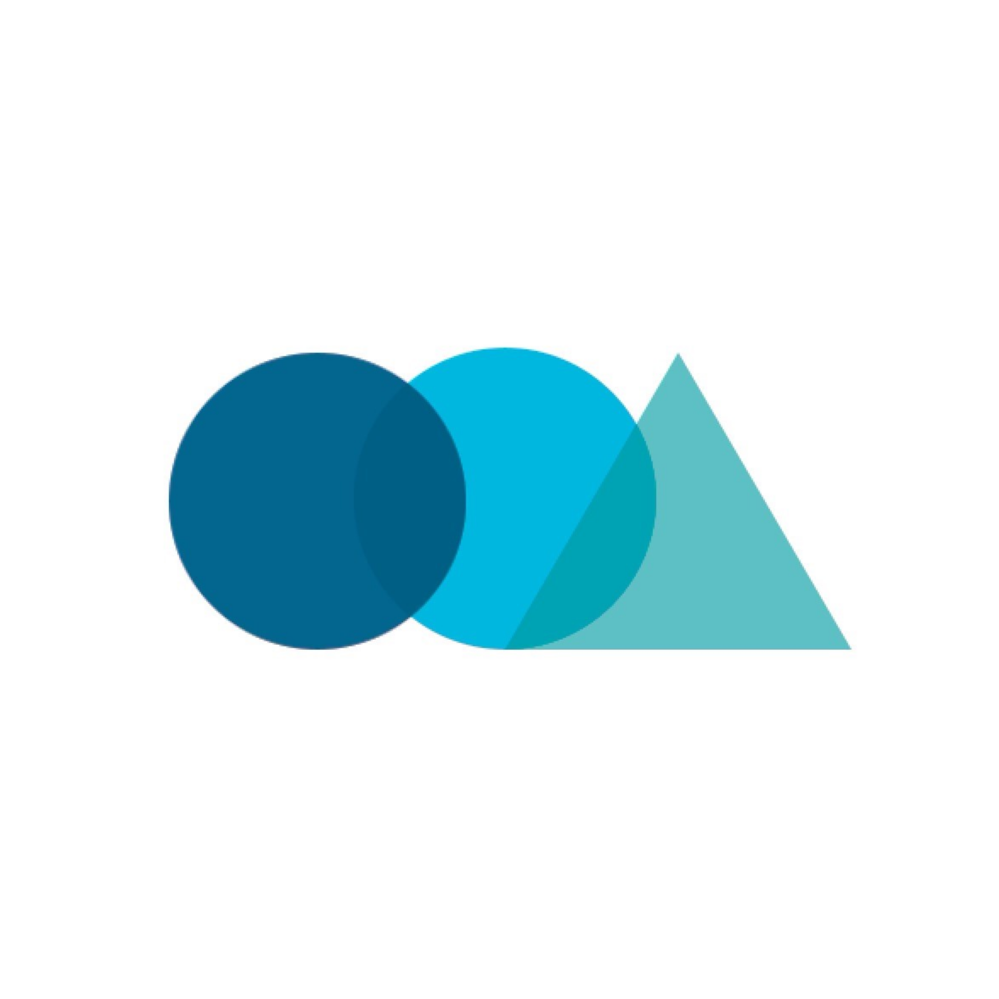

중앙동아리

유어슈
서비스 개발 동아리
그라운드, 슈랭크 등의 서비스를 같이 제작하고 있습니다. 유어슈 멤버들은 목표를 이루기 위해 스스로에게 필요한 역량이 무엇인지 학습하고 문제를 해결하기 위해 노력하며 함께 성장해나갑니다. 학번제/기수제 같은 서열제도가 없고, 누구나 서로 존중하며 커뮤니케이션 하는 동아리를 위해 실제 회사에서 사용하는 Slack, Google 문서 도구, Notion등을 사용합니다. 이런 도구를 활용하여 팀원 전체가 하는 일을 공유하고, 실제 회사를 미리 체험해 볼 수도 있습니다.